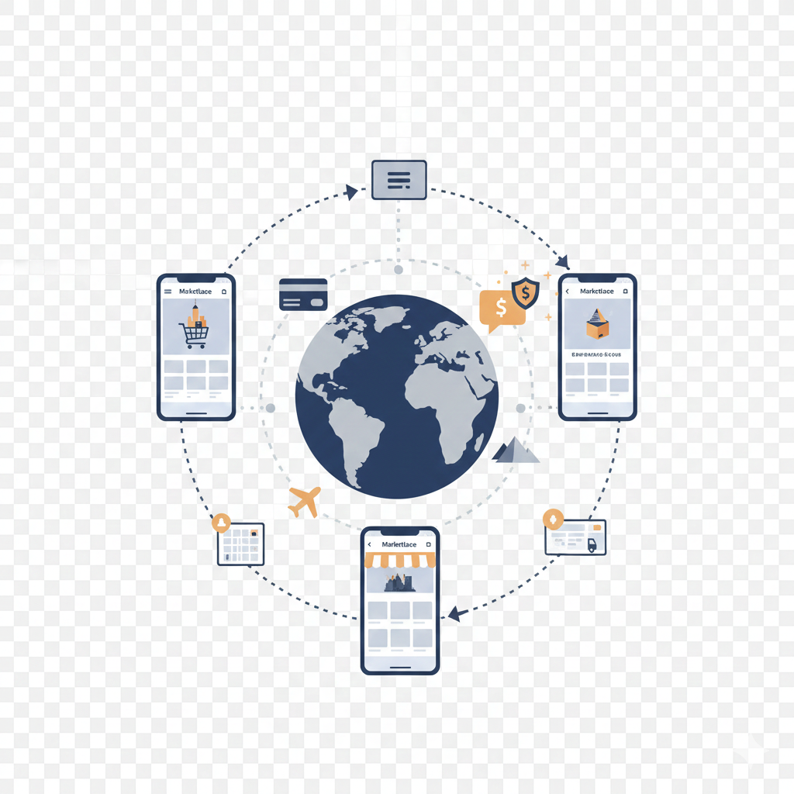
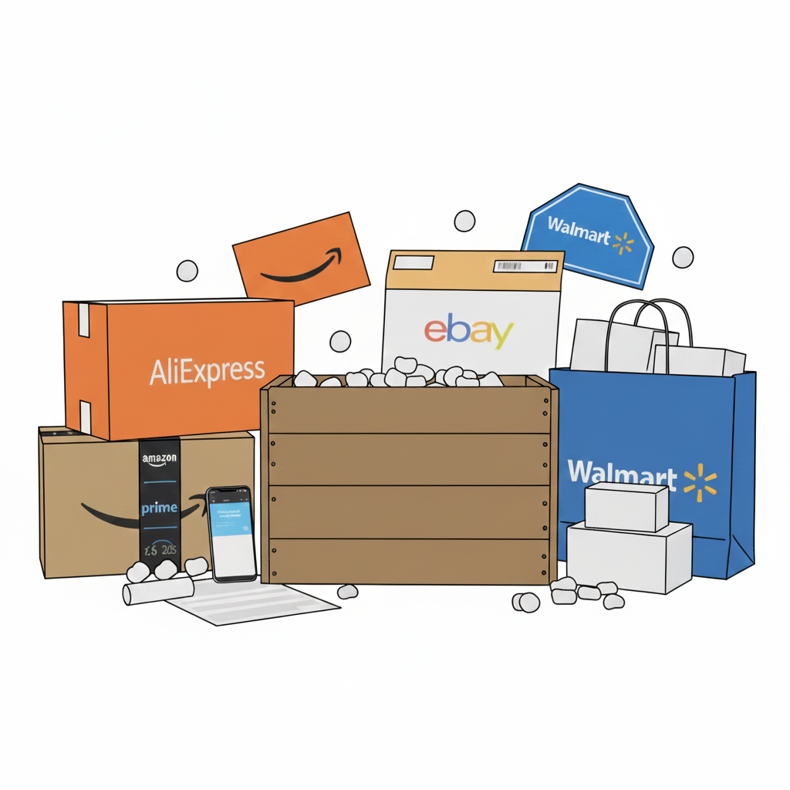
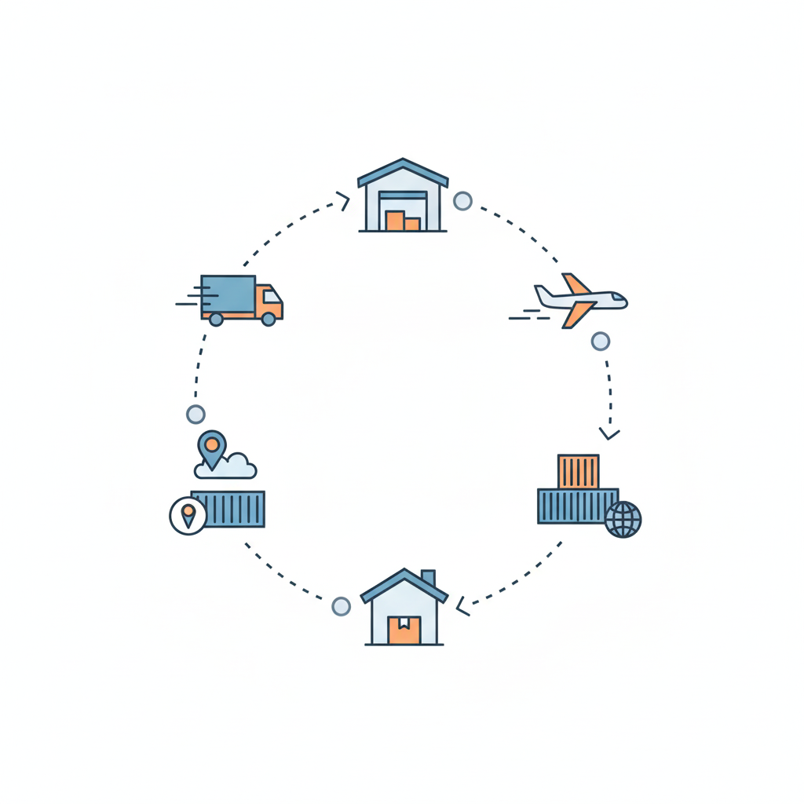
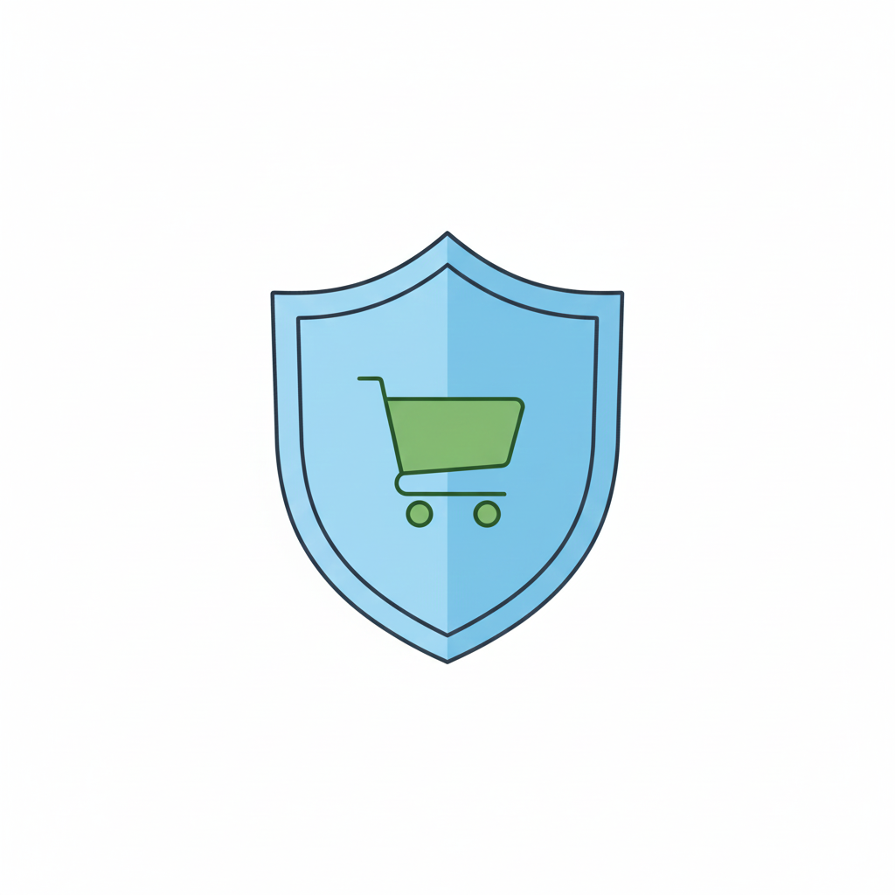

Multi-plataforma de ventas para productos físicos y digitales a nivel nacional e internacional, impulsada por tecnología de comercio electrónico
Woz Marketplace: La Evolución del E-commerce
Woz Marketplace no es solo una plataforma, es un ecosistema diseñado para maximizar tus ventas y simplificar la gestión de tu negocio. Ofrecemos herramientas robustas para que cualquier emprendedor, PYME o gran empresa pueda escalar sin límites geográficos.
Venta sin Fronteras

Comercializa a nivel local e internacional con soporte integral en pagos y envíos.
Nacional: Vende tus productos particulares con envío integrado y soporte logístico a nivel local, sin complicaciones.
Internacional: Abre tu negocio al mundo. Vende productos físicos y digitales globalmente gracias a nuestra infraestructura de pasarela de pago y gestión de divisas.
Multifuncional: Soporte nativo para la venta de bienes físicos (inventario, variantes) y bienes digitales (descargas, licencias).
Crecimiento Sostenible: Más de 500,000 vendedores confían en nuestra tecnología para su expansión diaria.
Importación de Productos

Integración con proveedores como AliExpress, Amazon, Walmart y eBay.
Catálogos Globales: Acceso directo a millones de productos de distintos sectores.
Sincronización de Inventario: Actualización automática de stock y precios para evitar errores de venta.
Flexibilidad de Precios: Posibilidad de ajustar márgenes de ganancia según el mercado local.
Logística y Transporte

Simplifica la gestión de envíos nacionales e internacionales.
Transportadoras Nacionales: Alianzas con empresas locales para asegurar entregas rápidas dentro de Paraguay.
Envíos Internacionales: Integración con transportadoras globales que garantizan trazabilidad y tiempos de entrega confiables.
Seguimiento en Tiempo Real: El comprador y el vendedor pueden monitorear el estado del pedido desde la plataforma.
Seguridad en Transacciones

La confianza es un pilar fundamental del modelo de negocio.
Pasarela de Pago Propia: Woz Payments asegura transacciones rápidas y transparentes.
Protección contra Fraudes: Algoritmos de nivel bancario para detectar operaciones sospechosas.
Billetera Virtual: Gestión segura de fondos en guaraníes y otras divisas, con opción de retiro a bancos locales.
Oportunidades para Vendedores en Paraguay
Woz Marketplace ofrece un entorno adaptado al mercado nacional.
Acceso a Micropréstamos: Basados en historial de ventas, para ampliar inventario en temporadas de alta demanda.
Planes Accesibles: Tarifas claras y en guaraníes, pensadas para emprendedores y PYMEs.
Soporte Local: Atención al cliente en español y adaptada a las necesidades del mercado paraguayo.
Ventajas Competitivas
Aunque no pretende ser mejor que gigantes como Amazon o eBay, Woz Marketplace se diferencia por:
Costos Reducidos: Menores comisiones y tarifas accesibles para pequeños negocios.
Ecosistema Integrado: Todo en una sola plataforma: ventas, pagos, logística y marketing.
Enfoque Regional: Pensado para emprendedores de Paraguay que buscan expandirse sin barreras.
Woz Dropshipping: Plataforma Integral de Comercio Electrónico para Paraguay
Woz Dropshipping es un módulo nativo dentro de Woz Marketplace, diseñado para ofrecer a los vendedores paraguayos una solución completa y eficiente bajo el modelo de dropshipping. Elimina barreras técnicas y costos de plataformas externas, permitiendo una gestión unificada y altamente rentable.
Conectividad y Estructura de Operación
1) Integración Global de Catálogos
Proveedores Principales: Amazon, AliExpress, Walmart, eBay y una red creciente de mayoristas especializados.
Exportación Directa: One-Click Import para llevar productos a tu tienda en Woz, con sincronización automática y constante de precios, inventario y descripciones.
2) Logística de Alto Rendimiento
Logística Global: Servicios premium como FedEx y consolidadores como AEX Group para envíos internacionales con tiempos optimizados y tracking fiable hasta Paraguay.
Logística Nacional: Integración con mensajerías paraguayas para entregas en 24–72 horas, ventaja competitiva clave.
Automatización de Pedidos: Ciclo completo automatizado: notificación al proveedor, orden de compra, pago y seguimiento logístico.
3) Enfoque en el Dropshipping Nacional
Programa de Afiliados Locales: Acceso a catálogos de proveedores paraguayos con precios mayoristas, sin costos de importación y con tiempos de entrega reducidos.
Beneficios Financieros y Modelo de Suscripción
1) Potencial de Ganancia y Eficiencia
Reducción de Costos Operativos: Módulo integrado que elimina suscripciones externas e integraciones, reduciendo costos hasta en 40%.
Márgenes Competitivos: Flexibilidad de precios y estrategias de nicho que permiten alcanzar ganancias netas de hasta 40% sobre el precio de venta final.
2) Modelo de Suscripción y Tarifas
Membresía Anual: Beneficios adicionales como catálogos expandidos y reducción de comisión por transacción.
Comisión Transparente: Tarifa estándar y fija de 5% + 1 USD aplicada a todas las ventas de dropshipping.
Ejemplo de Cálculo de Margen de Ganancia (Potencial 40%)
Concepto · Detalle del Costo (Gs.) · Cálculo y Justificación
Concepto
Detalle del Costo (Gs.)
Cálculo y Justificación
Precio de Venta Final
Gs. 200.000
Precio pagado por el cliente final.
Costo del Producto (CP)
Gs. 70.000
Costo adquirido del proveedor (ej. 35% del PV).
Comisión Woz
Gs. 15.350
5% de Gs. 200.000 + Gs. 7.350 (≈ $1 USD).
Concepto · Detalle del Costo (Gs.) · Cálculo y Justificación
Concepto
Detalle del Costo (Gs.)
Cálculo y Justificación
Costo de Envío (CE)
Gs. 35.000
Costo promedio de envío y logística (interno o internacional).
Costo Total (CP + CE + Comisión)
Gs. 120.350
Suma de todos los costos de operación.
Concepto · Detalle del Costo (Gs.) · Cálculo y Justificación
Concepto
Detalle del Costo (Gs.)
Cálculo y Justificación
Ganancia Neta
Gs. 79.650
Precio de Venta (Gs. 200.000) − Costo Total (Gs. 120.350).
Margen de Ganancia Neto
39.825%
(Gs. 79.650 / Gs. 200.000) × 100. Potencial del 40%.
1/3
Woz Paraguay: Adaptación Local
Moneda Local
Todas las tarifas, transacciones y reportes financieros se gestionan en Guaraníes (Gs), simplificando la contabilidad y el cumplimiento fiscal.
Soporte Adaptado
Soporte técnico y comercial localizado, centrado en regulaciones de e-commerce de Paraguay y asistencia en idioma español.
En síntesis, Woz Dropshipping ofrece tecnología de punta del comercio electrónico global con tarifas, logística y soporte optimizados para las necesidades específicas del mercado paraguayo.
Woz Payments: La Pasarela Financiera de Woz Marketplace
Solución financiera integral y segura que centraliza cobros, billetera virtual y transferencias para vendedores, PYMEs y freelancers en Paraguay y el exterior.
Billetera Virtual Descentralizada
Múltiples divisas: Guaraníes (Gs), USD, EUR y monedas regionales.
Control total: Saldo y movimientos en una sola plataforma.
Uso flexible: Dentro de Woz Marketplace y en comercios asociados.
Métodos de Cobro
Links de cobro únicos: Ideal para ventas puntuales o pedidos personalizados.
Códigos QR: Pagos rápidos en tiendas físicas o eventos.
Botones de pago: Integración sencilla en sitios y páginas de e-commerce.
API de integración: Para conectar sistemas externos con Woz Payments.
Usos Principales
Ventas de productos: Físicos y digitales con cobros inmediatos.
Suscripciones: Débito automático para servicios recurrentes.
Trabajos freelance: Pagos seguros y trazables.
Comisiones y Retiros
Comisión estándar: 5% + 1 USD por transacción.
Retiros en el día: Sujeto a tarifa por transferencia bancaria.
Conversión de divisas: Tipo interbancario con tarifa mínima de conversión.
Uso ideal: Para vendedores con clientes o proveedores fuera de Paraguay.
Seguridad y Confianza
Cifrado de extremo a extremo en todas las transacciones.
Verificación en dos pasos para mayor seguridad.
Detección de fraude con algoritmos de nivel bancario.
Certificación PCI DSS de nivel 1 (estándar más alto).
Beneficios para Paraguay
Guaraníes nativos: Operación en moneda local y reportes claros.
Micropréstamos: Basados en historial de ventas.
Retiros rápidos: Integración con bancos nacionales.
Enfoque emprendedor: Pensado para emprendedores, PYMEs y freelancers.
Precios Transparentes de Woz Marketplace
Ofrecemos un plan de inicio diseñado para el crecimiento, con una tarifa inicial asequible y una estructura de comisiones clara.
Estructura de Costos del Vendedor
Concepto
Detalle
Valor
Tarifa Anual Inicial
Costo de la plataforma durante los primeros 12 meses. Acceso a todas las herramientas.
250.000 Gs (Guaraníes)
Tarifa Mensual (Post-12 meses)
Costo de mantenimiento y soporte de la plataforma después del primer año.
250.000 Gs Mensuales
Comisión por Venta
Porcentaje aplicado a cada transacción realizada a través de Woz Payments.
5% + 1 USD
Nota: Los precios están sujetos a la paridad de divisas para transacciones internacionales, pero la comisión base es fija.
Lo que Dicen Nuestros Vendedores
★★★★★
Elena R. — España
“Woz Marketplace me permitió dejar Shopify. La integración con Dropshipping es perfecta y Woz Payments hace que los cobros internacionales sean inmediatos. ¡Una plataforma que realmente entiende al vendedor moderno!”
★★★★★
John K. — USA
“The 5% + $1 USD commission is unbeatable for the features they offer. I transitioned my Amazon FBA overflow to Woz and haven't looked back. The global reach for digital products is a game-changer.”
★★★★★
Rafael S. — Brasil
“Eu comecei com o plano anual e agora estou no mensal. O suporte é rápido e o Woz Dropshipping com fornecedores nacionais é um diferencial enorme. Minhas vendas duplicaram no último trimestre. Recomendo!”
★★★★★
Ana M. — Paraguay
“Empezar a vender mis artesanías fue sencillo. El plan en Guaraníes es accesible y la pasarela Woz Payments me da seguridad para mis cobros locales. ¡Por fin una solución pensada en el mercado nacional!”
★★★★★
Carlos L. — México
“La posibilidad de obtener un micropréstamo a través de Woz Payments me ayudó a comprar más inventario justo antes de la temporada alta. Es un ecosistema completo, no solo una tienda.”
★★★★★
Sarah B. — UK
“As a digital creator, Woz Marketplace provided the perfect platform to sell my design templates globally. The fee structure is transparent, and I appreciate the emphasis on independent selling.”
★★★★★
Felipe D. — Chile
“Increíble la variedad de proveedores que puedo importar con Woz Dropshipping. Me ahorré más de $300 USD al año al no usar otras plataformas. Es el futuro del e-commerce de bajo costo.”
★★★★★
Markus H. — Alemania
“Die Integration von nationalen und internationalen Lieferanten ist sehr effizient. Woz Payments ist schnell und die Gebühren sind fair. Ein wirklich professioneller Marktplatz.”
★★★★★
Sophie L. — Francia
“J'apprécie la simplicité de la gestion des stocks. Vendre des produits physiques et numériques sur la même plateforme sans frais cachés, c'est ce que je recherchais. Mon commerce a prospéré.”
★★★★★
Luigi B. — Italia
“Ho usato Woz Payments per inviare denaro a un fornitore estero e la transazione è stata immediata. La comodità di avere tutto in un'unica piattaforma è impagabile.”
1/10
Preguntas Frecuentes (FAQ)
Woz Marketplace
1. ¿Qué tipo de productos puedo vender?
Puedes vender productos **físicos** (con gestión de inventario, tallas, colores) y **digitales** (archivos descargables, licencias de software, libros electrónicos).
2. ¿Es realmente una plataforma global?
Sí. La plataforma soporta múltiples idiomas y divisas, permitiendo la venta y el cobro en cualquier país donde operen nuestros servicios de pago y envío asociados.
3. ¿Cómo se gestiona la logística de envíos?
Woz Marketplace se integra con servicios de mensajería nacionales e internacionales. Tú eliges al proveedor o usas nuestra red preferida para tarifas optimizadas.
4. ¿La tarifa de 250.000 Gs incluye el dominio de mi tienda?
La tarifa cubre el acceso a la plataforma, el alojamiento y el subdominio (ej: mitienda.wozmarketplace.com). La conexión a un dominio personalizado tiene un costo anual adicional mínimo.
5. ¿Puedo integrar mi inventario actual?
Sí, la plataforma cuenta con herramientas de importación masiva vía CSV o API para facilitar la migración de tu inventario existente.
6. ¿Qué pasa si mis ventas son muy bajas el primer año?
La tarifa inicial de 250.000 Gs es por acceso. El modelo de comisiones del 5% + $1 USD te asegura que solo pagas un porcentaje por ventas exitosas.
7. ¿Hay límites en la cantidad de productos a listar?
No, Woz Marketplace ofrece listados ilimitados de productos en todos sus planes.
8. ¿Qué herramientas de marketing incluye?
Incluye cupones de descuento, gestión de email marketing básico y herramientas de SEO integrado para posicionar tus productos.
9. ¿Ofrecen soporte técnico?
Sí, soporte prioritario por chat y correo electrónico 24/7 para todos los usuarios activos.
10. ¿Cómo me protegen de fraudes?
Woz Payments utiliza algoritmos de detección de fraude de nivel bancario para proteger las transacciones del vendedor y del comprador.
Woz Dropshipping
11. ¿Es obligatorio usar Woz Dropshipping?
No. Es un módulo opcional. Puedes vender únicamente tus propios productos o combinar ambos modelos.
12. ¿Cómo conecto con Amazon o AliExpress?
Nuestra herramienta de importación se conecta a los catálogos de los proveedores a través de sus API públicas, simplificando la sincronización de inventario y precios.
13. ¿Quién se encarga del envío en el Dropshipping?
El proveedor original (Amazon, Walmart, etc.) es el responsable de enviar el producto. Woz Marketplace solo se encarga de automatizar la orden de compra y el seguimiento.
14. ¿Puedo modificar los precios de los productos importados?
Sí. Puedes establecer reglas de margen de ganancia automáticas o fijar precios manualmente para cada producto importado.
15. ¿Qué sucede si el inventario del proveedor cambia?
La plataforma sincroniza el inventario cada 6 horas (o con mayor frecuencia en el plan avanzado) para minimizar los riesgos de vender productos sin *stock*.
16. ¿Es legal el modelo de Dropshipping de Woz?
Sí, es un modelo de comercio legal. Nosotros te proporcionamos las herramientas de integración para cumplir con la legalidad de la venta.
17. ¿Woz cobra una comisión extra por el Dropshipping?
No, la comisión estándar de 5% + $1 USD cubre todas las transacciones, independientemente de si el producto es propio o de *dropshipping*.
18. ¿Puedo hacer *dropshipping* con proveedores nacionales?
Sí, tenemos un programa de afiliados para proveedores nacionales que te permite añadir sus productos a tu tienda, beneficiándote de envíos más rápidos.
19. ¿El cliente final ve que el producto viene de Amazon?
Depende del proveedor, pero nuestra integración busca minimizar el *branding* del proveedor original, ofreciendo opciones de 'paquete ciego' cuando es posible.
20. ¿Qué tan difícil es configurar mi primera tienda de Dropshipping?
El proceso está guiado y puede ser completado en menos de 30 minutos. La interfaz es intuitiva y no requiere conocimientos de programación.
Woz Payments
21. ¿Qué tan seguro es Woz Payments?
Utilizamos cifrado de extremo a extremo, verificación de dos factores y certificaciones PCI DSS de Nivel 1, el estándar de seguridad más alto de la industria.
22. ¿Cuáles son las comisiones por envío de dinero P2P?
El envío de dinero entre usuarios de Woz Payments (P2P) dentro de la plataforma es **completamente gratuito**.
23. ¿Cómo retiro mis fondos a mi banco?
Puedes solicitar retiros directamente a tu cuenta bancaria local (en Gs o divisa local) o internacional. Se aplica una pequeña tarifa de retiro bancario, no relacionada con la comisión de venta.
24. ¿Cuánto tiempo tardan los retiros?
Los retiros nacionales suelen procesarse en 24 horas. Los internacionales pueden tardar de 3 a 5 días hábiles, dependiendo del país.
25. ¿Puedo obtener una tarjeta física de Woz Payments?
Sí, ofrecemos una tarjeta de débito virtual y física (solicitud opcional) que está vinculada directamente a tu billetera virtual.
26. ¿Qué requisitos hay para solicitar un préstamo?
Debes tener al menos 3 meses de historial de ventas activo y constante en Woz Marketplace. El monto se calcula en base a tu flujo de caja promedio.
27. ¿Qué divisas soporta la billetera virtual?
Soporta Gs (Guaraníes), USD (Dólar estadounidense), EUR (Euro), BRL (Real brasileño) y MXN (Peso mexicano) de forma nativa.
28. ¿Woz Payments puede usarse fuera de Woz Marketplace?
Sí, puedes usar tu billetera virtual para pagos en comercios asociados y realizar transferencias externas bajo un esquema de tarifas diferente.
29. ¿Cómo se maneja el cambio de divisas en las ventas internacionales?
Woz Payments aplica el tipo de cambio interbancario en el momento de la transacción con una mínima tarifa de conversión, asegurando un mejor valor para el vendedor.
30. ¿Hay límites en el saldo de mi billetera?
Los límites de saldo se basan en la verificación de identidad (KYC) completada. Los usuarios con verificación completa tienen límites significativamente más altos o ilimitados.
¡Da el Salto! Únete a la Revolución Woz
Tu futuro en el comercio electrónico global comienza aquí. Menos costos, más herramientas, y un soporte financiero que te respalda.